AIMA笔记
AI 历史
- 阶段
- 推理期：60-70年代 至 80年代初期
- 知识期：80年代初期 至 90年代中期
- 专家系统expert systems
- 学习期：90年代中期 至
- 两次寒冬
- 第一次寒冬开始于1974至1977，也被称为“AI危机”，主要是由于当时作为AI研究的核心技术——知识表示认知机制表现不佳，
- 机器翻译“寂静的十年”
- 联结主义的衰落（Minsky and Papert’s book Perceptrons：感知器只能被训练用于解决线性可分问题，异或问题就不行。对于多层网络没有算法能用来训练）
- 组合爆炸问题（计算量爆炸），但计算能力弱（Lighthill report）
- 第二次寒冬主要指1987年英国素有“机器人热”的情况出现突然转折，以及90年代以后因无法解决实际问题而导致投资者收回投资撤出的情况。
- John McCarthy 对专家系统进行批评说，它们缺少常识性知识
- 人工智能领域当时主要使用约翰麦卡锡的LISP编程语言，逐步发展的LISP机器被蓬勃发展的个人电脑击败，专用LISP机器硬件销售市场严重崩溃
- 第一次寒冬开始于1974至1977，也被称为“AI危机”，主要是由于当时作为AI研究的核心技术——知识表示认知机制表现不佳，
- 1956 Dartmouth会议（阿兰图灵没来，约翰麦卡锡、马文闵斯基、克莱德香农来了）
- John McCarthy（人工智能之父）：人工智能不一定等于生物智能
- Marvin Minsky
- Turing没来
- Turing：“计算机科学之父”和“人工智能之父”
- 《机器能思考吗》论文中，图灵提出了一种判定机器是否具有智能的实验方法，即著名的图灵测试：如果一台机器能够与人类展开对话而不能被辨别出其机器身份，那么这台机器就是智能的。
- 图灵，约翰·麦卡锡，马文·明斯基
- 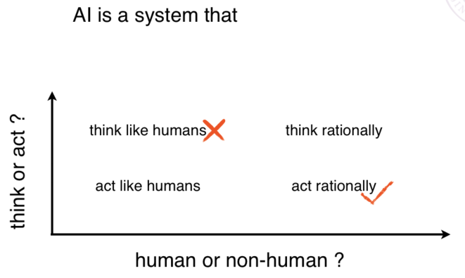
- IBM 深蓝：国际象棋（穷举搜索 min-max、alpha-beta剪枝）
- AlphaGo的主力
- 从大量人工到人工越来越少
- 希望机器具有和人一样的学习能力，而不是把人学习总结的结果放到机器里面
- Agent包括：humans、robots、softbots（软件机器人）、thermostats（自动调温器）
- Agent types
- 最简单的条件反射 simple reflex agents
- 有状态的条件反射 reflex agents with state（前面两条都可以写成if-else）
- goal-based agents
- utility-based agents
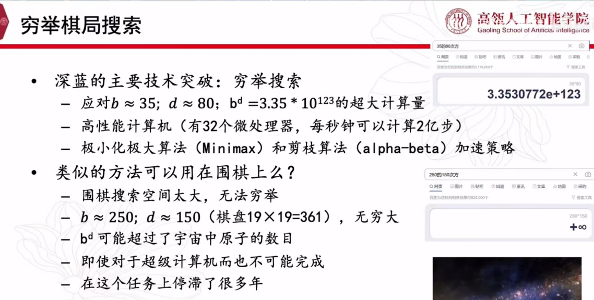
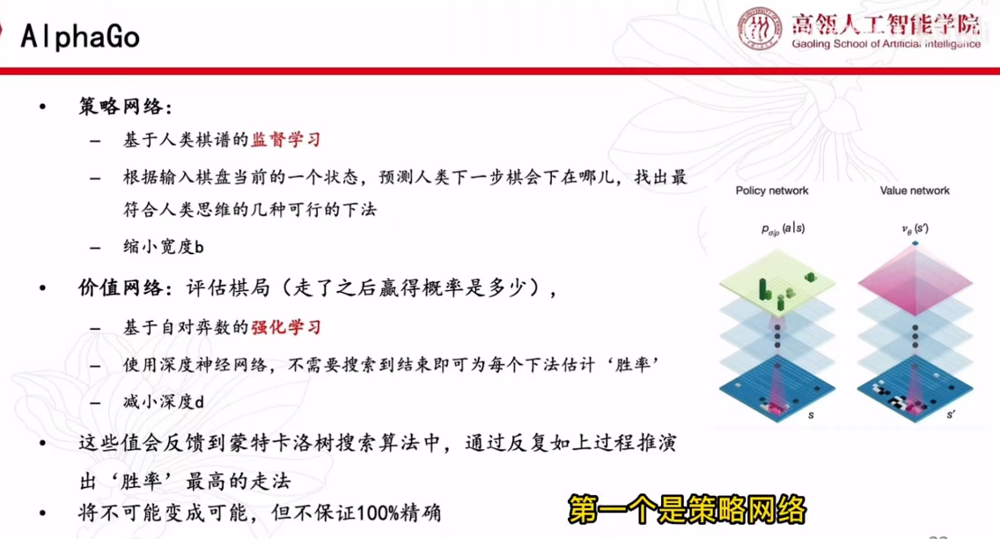
搜索
- 搜索问题中 node 是数据结构，不同的node可能包含相同的state
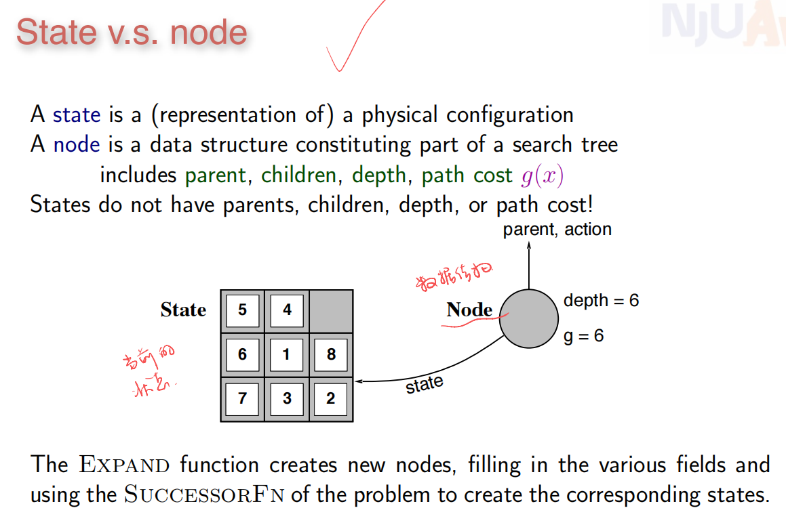
tree search：uninformed
蒙特卡洛树搜索（简称 MCTS）：基于蒙特卡洛方法的树搜索
简而言之是用蒙特卡洛方法估算每一种走法的胜率。如果描述的再具体一些，通过不断的模拟每一种走法，直至终局，该走法的模拟总次数N，与胜局次数W，即可推算出该走法的胜率为 W/N。
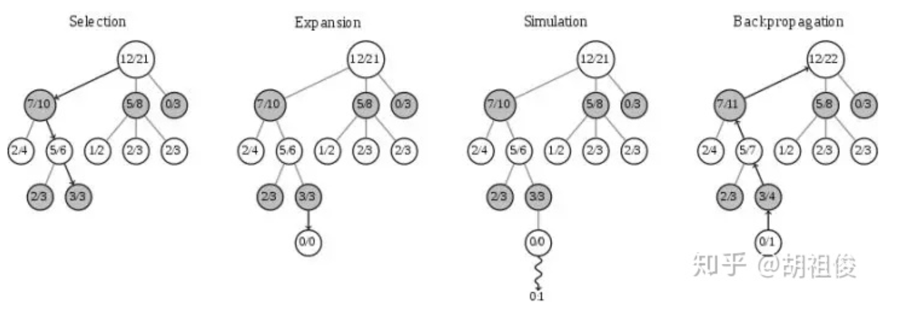
- 选择（Selection）
- 扩展 (expansion)
- 模拟（Simulation）
- 回溯（Backpropagation）
https://zhuanlan.zhihu.com/p/53948964
https://zhuanlan.zhihu.com/p/361120908
是最优的（前提：无数次采样）
AlphaGo
是tree search、DNN、RL的组合
https://zhuanlan.zhihu.com/p/410069008
uninformed search 无信息搜索
- 无信息搜索也被称为盲目搜索，该术语（无信息、盲目的）意味着该搜索策略没有超出问题定义提供的状态之外的附加信息。所有能做的就是生成后继节点，并且区分一个目标状态或一个非目标状态。所有的搜索策略是由节点扩展的顺序加以区分。这些搜索策略是：宽度优先、深度优先、以及一致代价搜索。
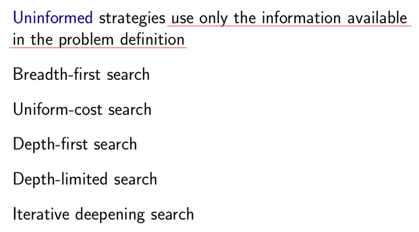
（1）b或分支因子，其表示任何结点的最多后继数；
（2）d或目标结点所在的最浅深度（从根节点到目标状态的步数）；
（3）m状态空间中任何路径的最大长度。
BFS
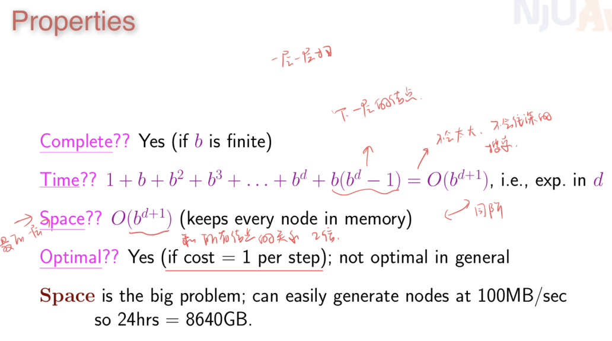
d是目标所在的那一层
DFS
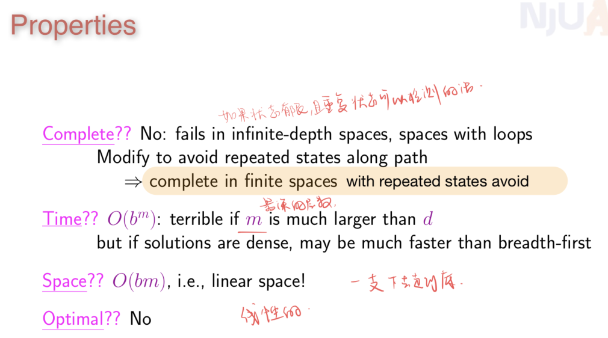
m是最深的层数，$b^m$ 和 $b^d$ 是不同阶的
- 时间长，空间小
- 最大空间是一次下去走到底，是线性的
- 不是optimal的
uniform-cost search 代价优先搜索
- 从队列中出去的cost都是逐渐增长的
- 如果现在有一个node比在memory中的node的cost还要小，先加到队列中去
- 不是在把node往里放的时候检查goal state，把node往外拿的时候检查
- 如果cost都一样，等于BFS
- 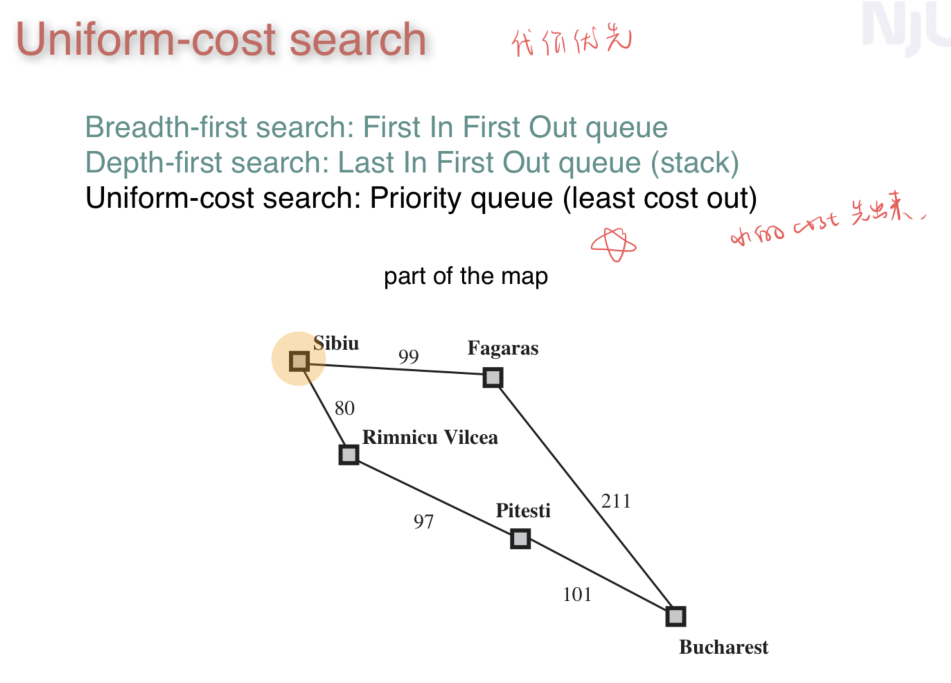
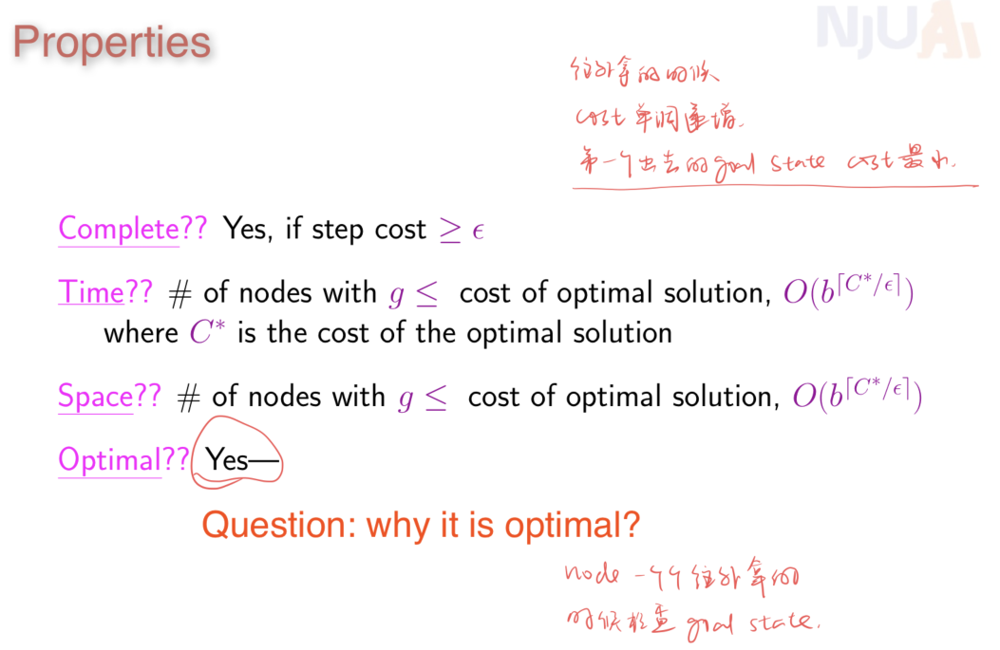
- 考！！！
- BFS时间更低，DFS空间更低，如何结合优点？
深度受限的深度优先搜索
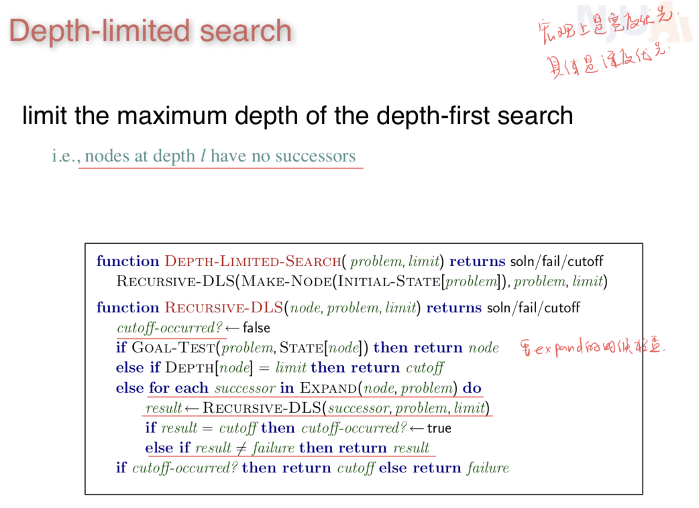

- 迭代加深的深度优先搜索：宏观上是BFS，是一层一层搜的，微观上是DFS
- 上面有重复搜的，但多花的时间是常数倍，时间复杂度的阶和BFS的阶一样
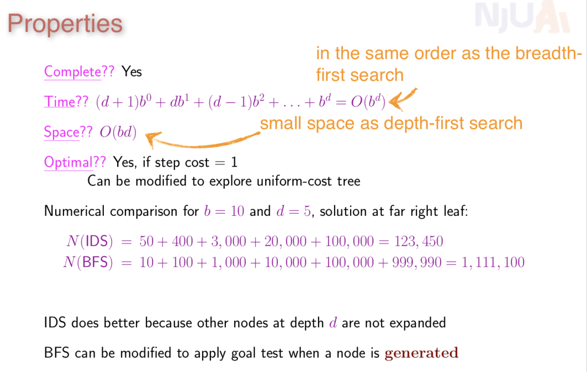
总结
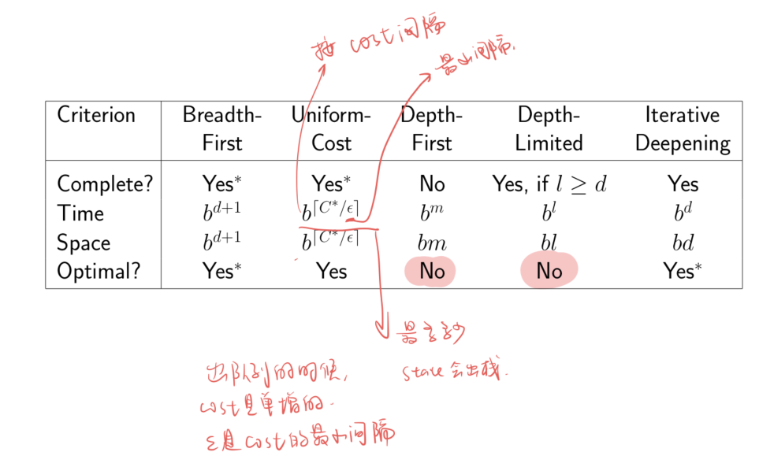
informed-cost search
$A^*$
- 可采纳性（admissible）：heuristic function 只能低估 $h(n)\leq h^*(n)$
- 一致性（consistency）：$h(n)\leq c(n,a,n’)+h(n’)$
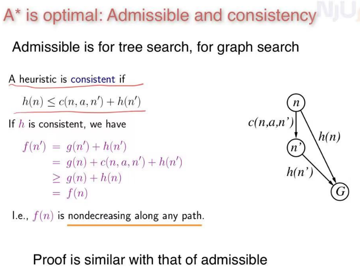
- 证明最优性：
- 对于任何一个在最优路径上的node，$f(n)=g(n)+h(n)\leq g(n)+h^*(n)=g(G(1))\leq g(G(2))$，所以最优路径上的那些结点会比 $G(2)$ 先出来。
- $h(n)$ 是启发式的值，$h^*(n)$ 是实际值
- 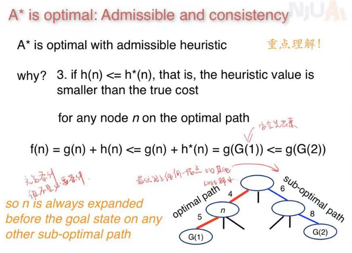
- $A^$ 有如下性质：如果 $h(n)$ 是可采纳的，那么 $A^$ 的树搜索版本是最优的；如果 $h(n)$ 是一致的，那么图搜索的 $A^*$ 算法是最优的
- 从一致性证明可采纳性
- 数学归纳法：对从n结点到目标的最短路径上的结点个数k做归纳
- k=1，$n’$ 是目标节点，$h(n)\leq c(n,a,n’)$
- 假设 $n’$ 在最短路径上离目标点k步的地方，且 $h(n’)$ 是可采纳的，有 $h(n)\leq c(n,a,n’)+h(n’)\leq c(n,a,n’)+h^(n’)=h^(n)$
- 所以最短路上距离目标k+1步的结点也满足可采纳性
旅行商问题TSP NP难问题 放松成 最小生成树问题
https://www.docin.com/p-669655901.html
？？？
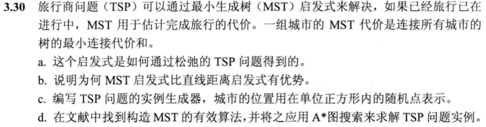
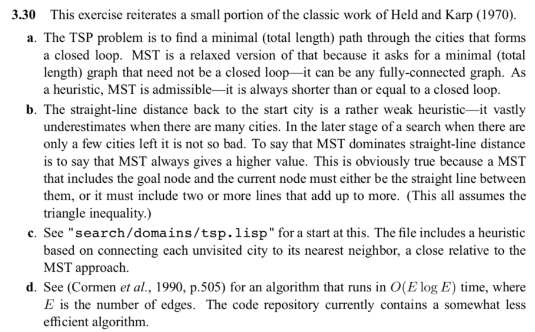
算法导论P654
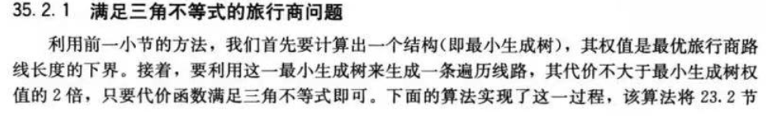
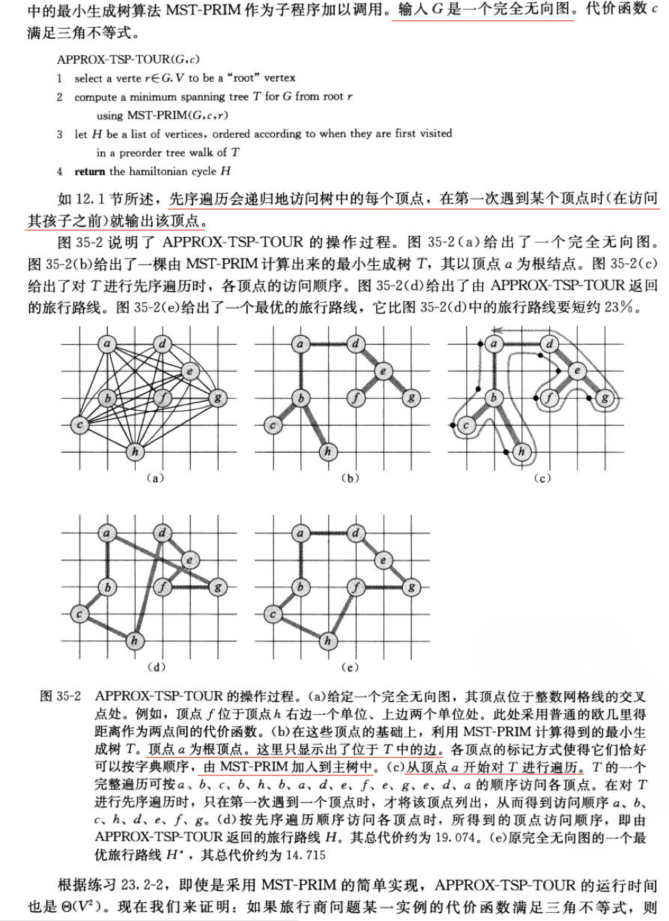
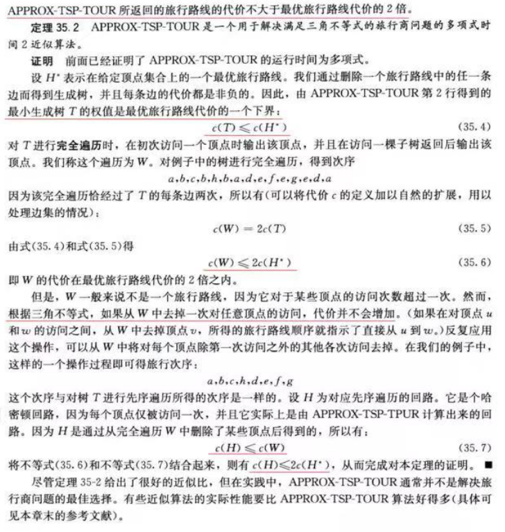
- IBM deep blue 和深度学习无关
minimax
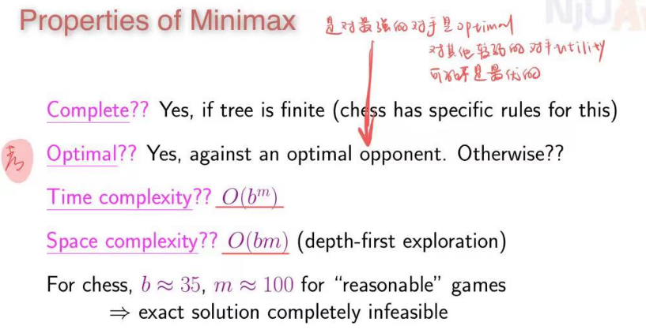
- $\alpha-\beta$ 剪枝：time complexity $O(b^{m/2})$，不影响 completeness
- 深度受限：看不到终局，采用评估当前局面的函数。不能完全保证是最优的
General Solution Space Search & CSP
- 贪心思想
- 爬山、梯度下降（做了很大的“利用”）
- 都可能找不到全局最优解
- 纯随机探索：在无限步后是最优的（做了很大的“探索”）
- 局部搜索
- 爬山法（贪婪局部搜索，只是选择邻居中状态最好的一个）
- 模拟退火搜索（把爬山法和随机行走以某种方式结合）
- 局部束搜索
- 遗传算法（零阶，不需求导，收敛/有最优解条件）
Knowledge
inference by enumeration：Depth-first enumeration of all models is sound and complete
- $O(2^n)$ for $n$ symbols；problem is co-NP-complete
命题逻辑定理证明
- 概念
- 有效性（valid）：一个语句是有效的，如果在所有的模型中它都为真
- $\alpha\models \beta$ 当且仅当语句 $\alpha \Rightarrow\beta$ 是有效的
- 可以通过检查每个模型中 $\alpha \Rightarrow\beta$ 来判断 $\alpha\models \beta$，或者证明 $\alpha \Rightarrow\beta$ 等价于 True
- 反过来，演绎定理说明每个有效的蕴含语句都描述了一个合法的推理
- $\alpha\models \beta$ 当且仅当语句 $\alpha \Rightarrow\beta$ 是有效的
- 可满足性（satisfiability）
- 如果一个语句在某些模型中为真，那么这个句子是可满足的
- 命题逻辑语句的可满足性判定——SAT问题，是第一个被证明为NP完全的问题
- $KB\models \alpha$ 当且仅当 $KB\wedge \neg \alpha$ 是不可满足的
- 有效性（valid）：一个语句是有效的，如果在所有的模型中它都为真
- 前向和反向链接
- 前向链接：数据驱动，自动、无意识的过程
- 反向链接：目标驱动，适用于问题解决，通常开销远小于知识库规模的线性值
- 从查询开始进行推理。如果查询 q 已知为真，那么无须进行任何操作。否则，算法寻找知识库中那些能以 q 为结论的蕴涵式。如果其中某个蕴涵式的所有前提都能证明为真（通过反向链接），则 q 为真
- 概念
命题逻辑三种特性
- 描述性语言。它的语义是基于语句和可能世界之间的真值关系
- （有充分的表达能力，）可以采用析取式和否定式来处理不完全信息
- 合成性。语句的含义是它的各部分含义的一个函数，如 $S_{1,4}\wedge S_{1,2}$ 与 $S_{1,4}$ 和 $S_{1,2}$ 的含义有关
原子语句
- 由谓词符号以及随后被括号括起来的列表项组成
- 原子语句可以使用复合项作为参数
复合语句
- 由逻辑连接词构成的语句
命题逻辑真值表有穷；一阶逻辑真值表无穷（有变量，变量一旦可以取成谓词，则可以自己嵌套自己，变量的取值可以无穷）
命题化
- 通过保持蕴涵，每个一阶知识库和查询都可以命题化。这样，得到一个有关蕴涵的完备决策过程……也可能得不到。
- 当知识库中包含函词时，可能的基项置换集是无限的
- 如果某个语句被原始的一阶知识库蕴涵，则存在一个只涉及命题化知识库的有限子集（已被证明）
- 通过命题化进行一阶推理是完备的，即任何蕴涵语句都能得到证明
- 一阶逻辑的蕴涵问题是半可判定的：存在算法能够证明蕴涵成立的语句，不存在算法否定蕴涵不成立的语句
实例化后可以用处理命题逻辑的方法处理一阶逻辑，这是系统在一阶逻辑上进行推理的办法
- 全称量词把所有可能性写一遍，存在量词就找个名字
- 前提是不嵌套，有限长
三种命题逻辑的推理方法都是complete和sound
- 完备complete不一定是算法决定的，要根据问题。命题逻辑是有限的，容易证明complete
- 一阶逻辑是无限的，算法最多是正确的，不一定完备
- 一阶逻辑FOL是semidecidable（最坏情况是不可判定）
- 与一般的一阶逻辑一样，具有确定子句的蕴涵是半可判定的
一阶逻辑的推理
unification
前件推理
证据出发推结论
事实和条件不一定能匹配上，要做一个替换
正确但不完备，不一定能停下来（可能有无穷递归）；有限clause是正确且完备的
和命题逻辑的前向推理多了一个unify
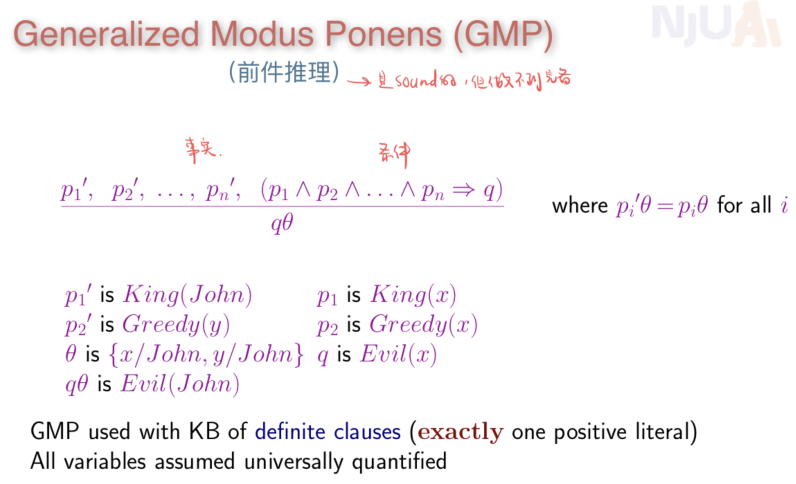
性质
- 前向链接对于一阶确定子句是正确、完备的
数据日志 是一种受限于一阶确定语句的没有函词的语言。FC 对数据日志可在多项式次迭代内完成 $p\cdot n^k$
与一般的一阶逻辑一样，具有确定子句的蕴涵是半可判定的
反向链接
- DFS搜索，空间需求与证明规模呈线性关系
- 反向链接与前向链接不同，要忍受重复状态和不完备问题的困扰
- 广泛应用于逻辑程序设计系统
Prolog
用prolog实现dfs，不是过程性的表述
Prolog程序的执行是深度优先的反向链接
dfs(X) :- goal(X) dfs(X) :- successor(X,S), dfs(S)backward chaining是用深度优先搜索实现的，prolog是用backward chaining实现的
Prolog是不完备的，原因是对有些知识库，它无法证明被蕴涵的语句。前向链接不会有这个问题
FOL的消解是完备的
- SAT problems
- 2SAT：every clause has at most 2 literals => P-solvable
- 3SAT：every clause has at most 3 literals => NP-hard
- DFLL：a deep-first search with heuristics （回溯/DFS）
- WalkSAT：a local search hill-climbing or others（failure $\not=$ unsatisfiable）
概率推理
- 给定父结点，结点 $X$ 条件独立于它的非后代结点
- 给定马尔可夫覆盖（一个结点的父结点、子结点以及子结点的父结点），结点 $X$ 条件独立于网络中的所有其他结点
- 贝叶斯网
- 精确推断：先把隐变量全部拆出来，再写成条件概率形式
- recursive depth-first enumeration：$O(n)$ space，$O(d^n)$ time
- 近似推断
- 直接采样
- 拒绝采样：计算条件概率 $P(X|e)$。先根据网络指定的先验分布生成采样样本，再拒绝所有与证据不匹配的样本，最后在剩余样本中通过统计 $X=x$ 的出现频次而计算出估计概率 $\hat{P}(X=x|e)$
- 把不符合条件的采样扔掉（效率低，万一所需的采样概率很小的话需要sample很多）
- 似然加权：先把条件固定住，再去sample其他的变量。每个sample的样本有一个权重
- 拒绝采样：计算条件概率 $P(X|e)$。先根据网络指定的先验分布生成采样样本，再拒绝所有与证据不匹配的样本，最后在剩余样本中通过统计 $X=x$ 的出现频次而计算出估计概率 $\hat{P}(X=x|e)$
- MCMC 马尔可夫链蒙特卡洛
- 马尔可夫表示没有记忆性
- 直接采样
- 精确推断：先把隐变量全部拆出来，再写成条件概率形式
- NPC：
- 存在这一类NP问题，所有的NP问题都可以约化成它。换句话说，只要解决了这个问题，那么所有的NP问题都解决了。
- 同时满足下面两个条件的问题就是NPC问题。
- 首先，它得是一个NP问题；
- 然后，所有的NP问题都可以约化到它。
- 证明一个问题是 NPC问题也很简单。先证明它至少是一个NP问题，再证明其中一个已知的NPC问题能约化到它
- 逻辑电路问题是NPC类问题的“鼻祖”。
- 有了第一个NPC问题后，一大堆NPC问题就出现了，因为再证明一个新的NPC问题只需要将一个已知的NPC问题约化到它就行了。后来，Hamilton 回路成了NPC问题，TSP问题也成了NPC问题。
- NP-hard
- NP-Hard问题是这样一种问题，它满足NPC问题定义的第二条但不一定要满足第一条（就是说，NP-Hard问题要比 NPC问题的范围广）。
- 即不一定是NP问题，但NP问题能约化成NP-hard